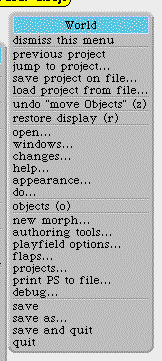

Ahora Ud. debe poseer una carpeta denominada Squeak 3.2 folder o similar , dentro
de la cual deben existir al menos cuatro archivos , denominados Squeak 3.2.exe
(la máquina virtual para windows), Squeak 3.2.image (la imagen del sistema),
Squeak 3.2.changes (donde se guardan los cambios a las definiciones) y Squeak
3.2.sources (los fuentes del sistema, que se pueden leer con cualquier procesador
de texto).
Para comenzar a trabajar, arrastrar el archivo Squeak 3.2.image sobre el icono
de Squeak 3.2.exe.
Usted deberá tener ahora una pantalla parecida a esta.
Para que le aparezca la ventana Workspace, arrastre la solapa Tools con el
mouse, y elija la ventana correspondiente (tercera contando desde arriba) ,
moviendo el mouse despacio, aparecen globos de ayuda.
Arrastre la ventana correspondiente sin soltar y ubíquela donde desee.
En algún lugar del fondo (que no sea una ventana), presione el mouse y le aparecerá el menú

Elegir la opción windows & flaps y aparecerá un nuevo menú.
En este nuevo menú pulsar collapse all windows.
La barras con nombre y dibujos son ventanas colapsadas (minimizadas).
Para restablecerlas a su tamaño y posición original , pulsar expand
all windows.
Para restablecerlas de a una pulsar el círculo de la derecha.
Para eliminarlas del sistema, pulsar la cruz de la izquierda (No las eliminen).
Para obtener una escritorio de trabajo , realizar los siguientes pasos.
De la solapa Tools, sacar
el System Browser
, el Workspace y luego
Transcript.
Si se coloca el mouse sobre una de las líneas de borde, se apreciará
un dibujo, que permite deformar la ventana.
Acomodarlas según se desee.Así se verá su escritorio luego
de haber finalizado.

{kind=link}
{kind=link}